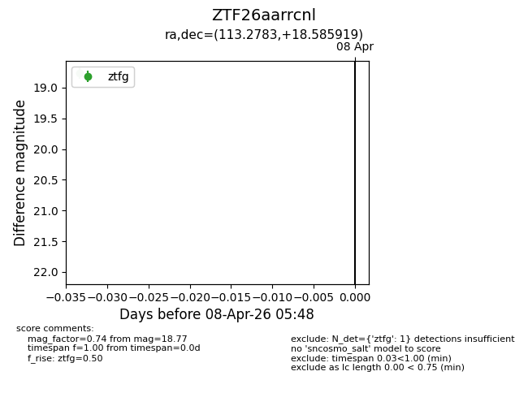
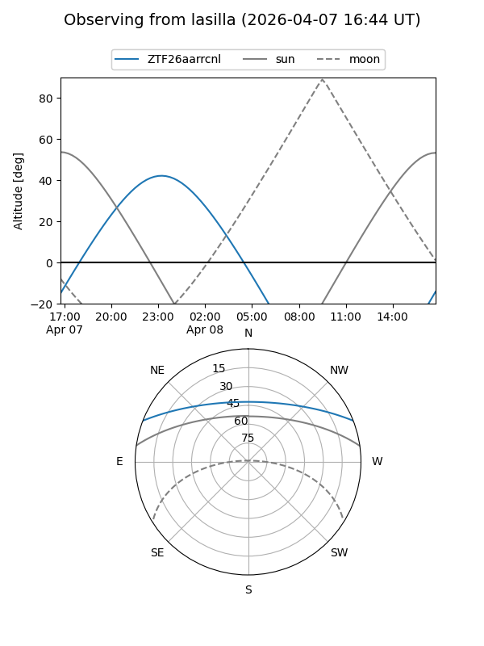
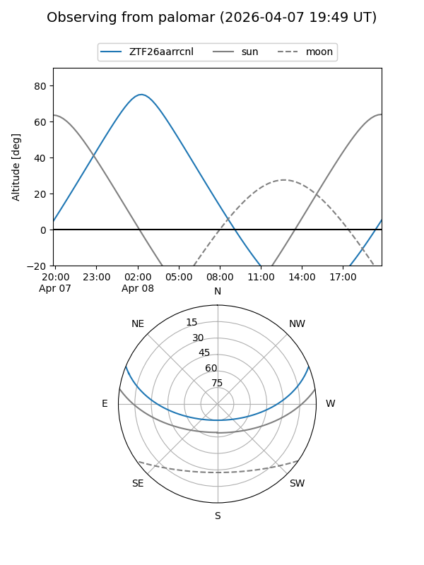

ZTF26aarrcnl
Target ZTF26aarrcnl at 2026-04-08 05:52
Aliases and brokers:
FINK: link
Lasair: link
ALeRCE: link
alt names
ZTF26aarrcnl (ztf,fink_ztf)
Coordinates:
equatorial (ra, dec) = 113.2783,+18.58592
equatorial (HMS+DMS) = 07:33:06.80,+18:35:09.31
galactic (l, b) = (200.5003,+17.33080)
Flags:
Photometry:
last ztfg=18.77
1 ztfg detections
Lightcurve

Visibility


Additional plots